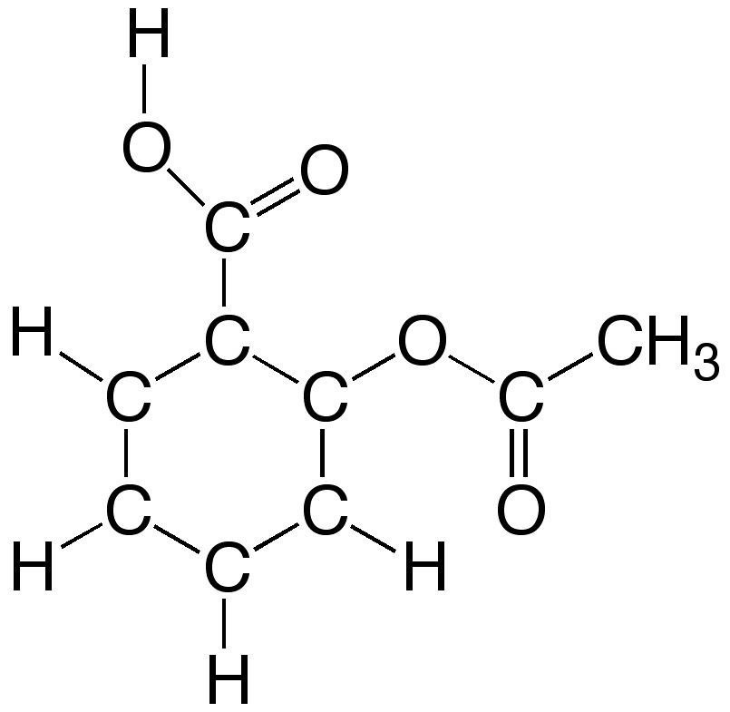
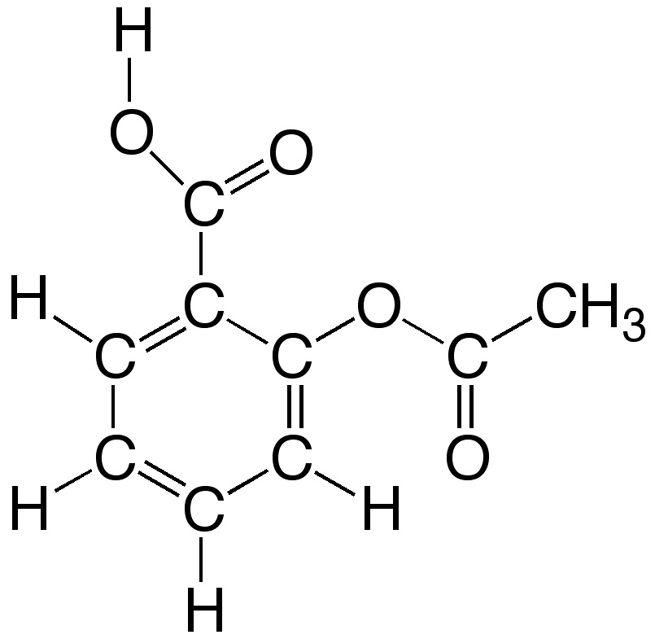
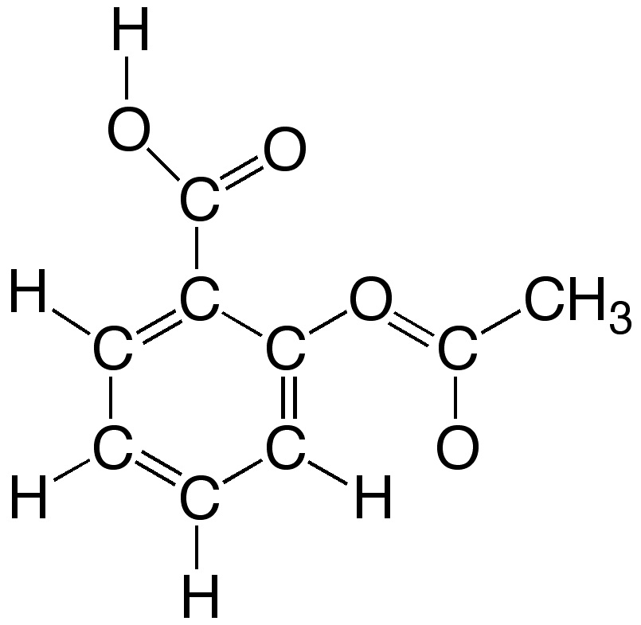

Enlace en compuestos orgánicos 1
La ventana derecha muestra la estructura de la molécula de aspirina (ácido acetilsalicílico). Es una imagen interactiva que puedes reorientar poniendo el cursor sobre cualquier punto de la ventana y moviendo el ratón. Colocando el cursor sobre cada esfera aparece la identidad del átomo. Por ejemplo C #1 indica que se trata de un átomo de carbono. (Cada átomo tiene un número de orden dentro de la molécula).
Todos los átomos están unidos por línea o barra independientemente de cuál sea el orden de enlace que los une. Es fácil medir las distancias y ángulos de enlace entre diferentes átomos de la molécula y obtener así información útil.
Una vez analizado el modelo selecciona cuál de las siguientes figuras representa mejor los enlaces en la molécula teniendo presente los valores medios de distancias de enlace.
|  |  |  |
No es correcta. Revisa los enlaces del anillo hexagonal.
|
|
No es correcta. Revisa los enlaces C-O.
|
|
El dibujo representa correctamente los enlaces en la molécula del
ácido acetilsalicílico.
|
|
No es correcta. Revisa los enlaces C-O.
|